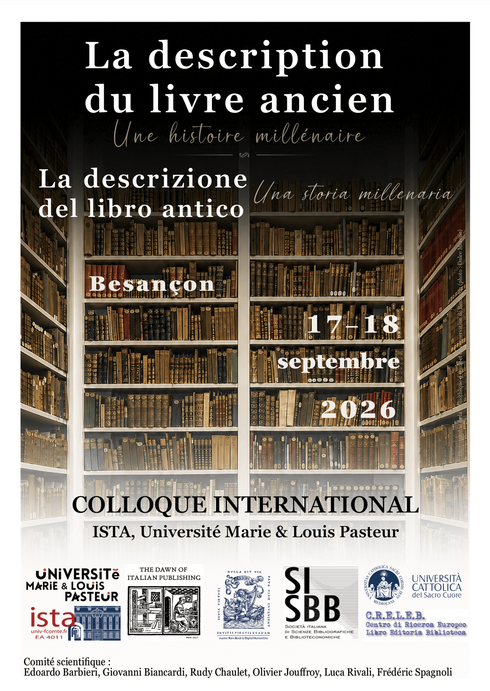
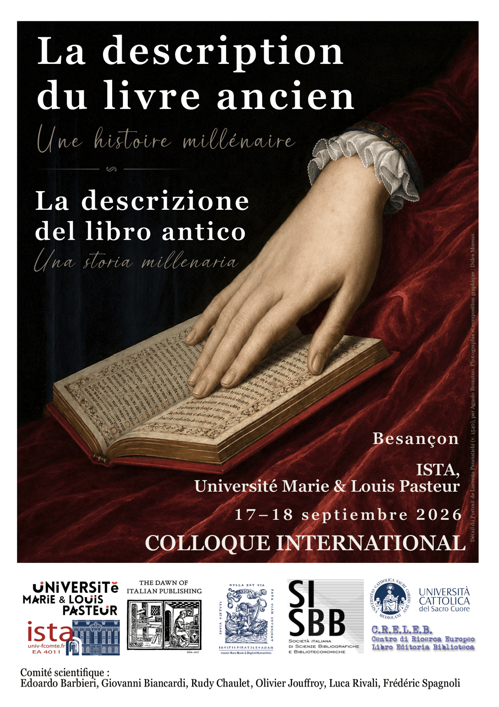
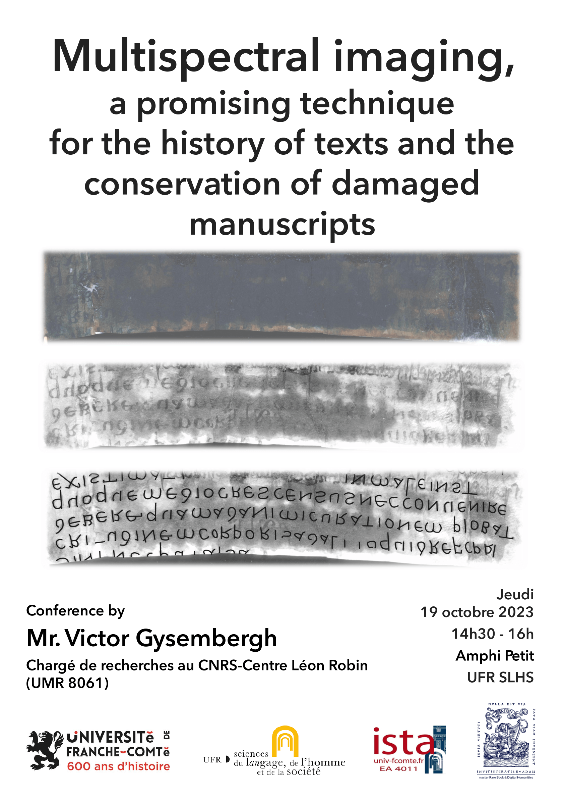
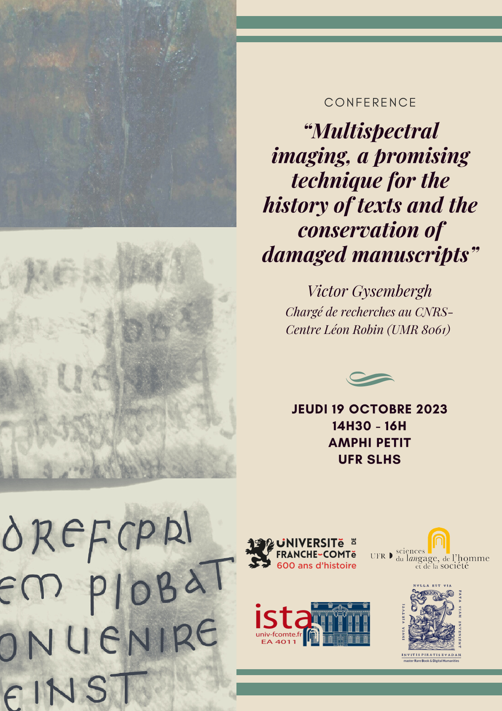
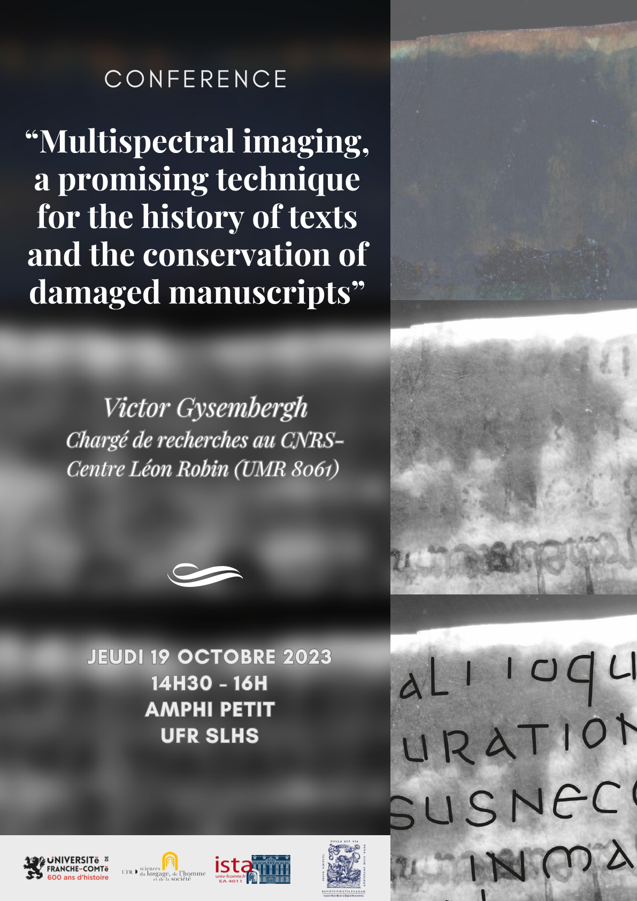
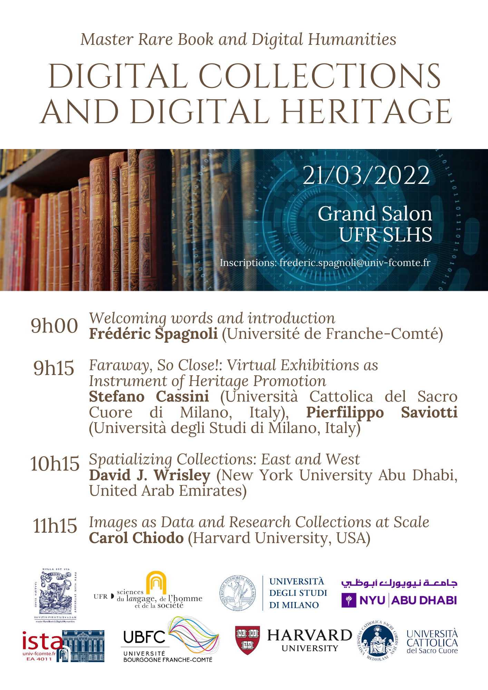

Conception Graphique & Affiches Académiques
Création de supports de communication visuelle pour des événements scientifiques, séminaires et colloques internationaux. De la conception graphique (choix typographiques, composition, colorimétrie) jusqu'à la préparation des fichiers pour l'impression, avec une attention particulière portée au patrimoine littéraire et historique.
Environnement technique : Soucieuse de m'aligner sur les principes de la Science ouverte promus par le milieu académique, j'ai privilégié l'utilisation de logiciels libres et open source (Scribus, GIMP) pour la réalisation de ces projets personnels, démontrant ainsi ma capacité d'adaptation et ma maîtrise des principes fondamentaux de la PAO indépendamment de l'outil (en complément de mon expérience sur la suite Adobe).
Colloque International : La description du livre ancien
Affiches conçues pour le colloque international organisé par l'ISTA (Université Marie & Louis Pasteur) à Besançon. L'objectif était de transmettre la profondeur historique du sujet tout en conservant une lisibilité optimale pour un affichage institutionnel. Pour ces créations, j'ai intégré mes propres photographies : les rayonnages de la bibliothèque municipale de Besançon et un détail capturé à la Galerie des Offices (Uffizi) à Florence. Cette démarche garantit une identité visuelle sur mesure et une gestion autonome des droits d'auteur.


Conférences Scientifiques & Master Rare Book
Série de posters réalisés pour des conférences spécialisées, notamment sur l'imagerie multispectrale appliquée à la conservation des manuscrits, et sur les collections numériques. Travail sur la hiérarchisation de l'information et l'intégration de photographies techniques.



